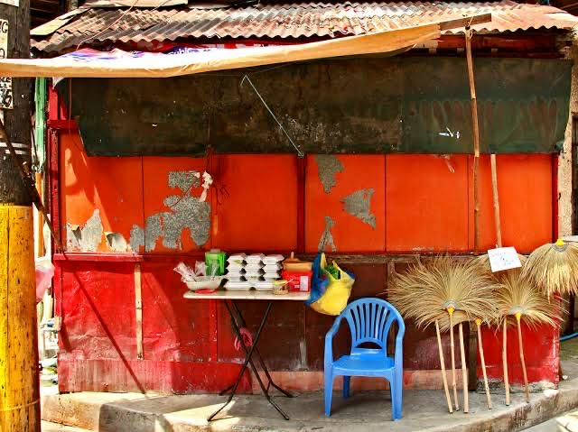

Crowd Favorites

Inihaw na Isaw
Marinated for 24 hours in our secret heirloom spices.

Golden Kwek-Kwek
Crispy orange batter with a spicy vinegar dip.

Street Fishballs
The timeless afternoon snack reimagined elegantly.

Ang Diwa ng Kanto
Tawanan sa gitna ng usok at ang pagkakaisa ng bawat Pinoy sa bawat tusok.
"Bringing the authentic soul of the streets to the spotlight."